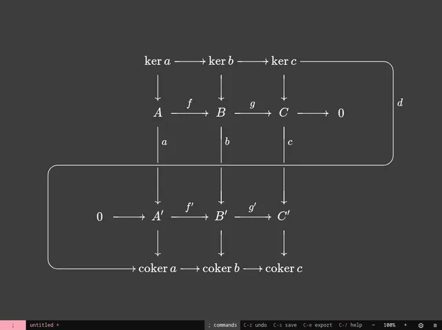

Sagitta
A keyboard-driven tikz-cd editor.

Sagitta is a keyboard-driven tikz-cd editor that produces LaTeX-ready diagrams at speed. The syntax of tikz-cd is elegant, but it is not always the fastest to write, the easiest for complex diagrams, or the easiest to tweak afterwards. A hand-drawn diagram is quick and accurate, but it is not reproducible and is nearly impossible to edit after creation. Sagitta aspires to combine the benefits of both.
Type it, get tikz-cd
The keys pressed and the file Sagitta saves.
Two modes
Sagitta supports the alternative spreadsheet mode. By default, with spreadsheet mode off, bare keys execute the commands associated with them, and ; opens the command menu. Label editing requires first pressing RET.
In spreadsheet mode, typing most keys drops directly into label editing. Pressing ; enables commands and shows the command menu after a short delay. If the first character you want is otherwise bound, such as ;, you must still first press RET.
The command line : and search / function the same in both modes.
Get it
| Platform | Package | Notes |
|---|---|---|
| Linux | AppImage | I use this one! |
| Windows | Installer or portable .exe | Tested by my friends. |
| Browser | Webpage | No install, friendly for macOS. |
In the browser, Sagitta needs HTTPS to open and save files and folders. Chromium opens and saves a file in place; Firefox reads a copy and saves by downloading one. Settings and the keybindings live in the browser’s storage. Keys the browser reserves are unavailable, so a new diagram is :new rather than C-n.
Notes
Expect major changes until v1.0.0.
Sagitta is a fork of varkor’s quiver and opens quiver #q= links. The #q= links Sagitta produces are mostly compatible with quiver, save for some constructions like checkpoint arrows and crossings. Many thanks to varkor for giving the world quiver.
For the story of how Sagitta came to be, check out my blog!